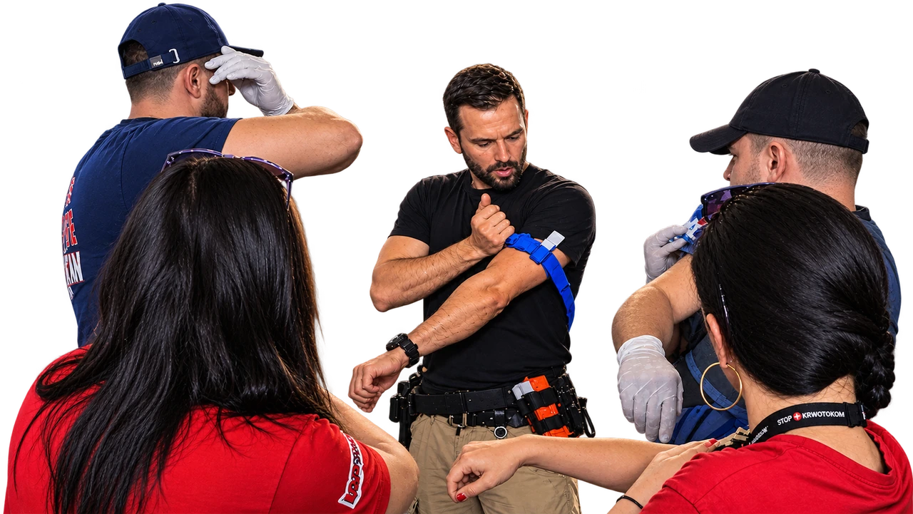
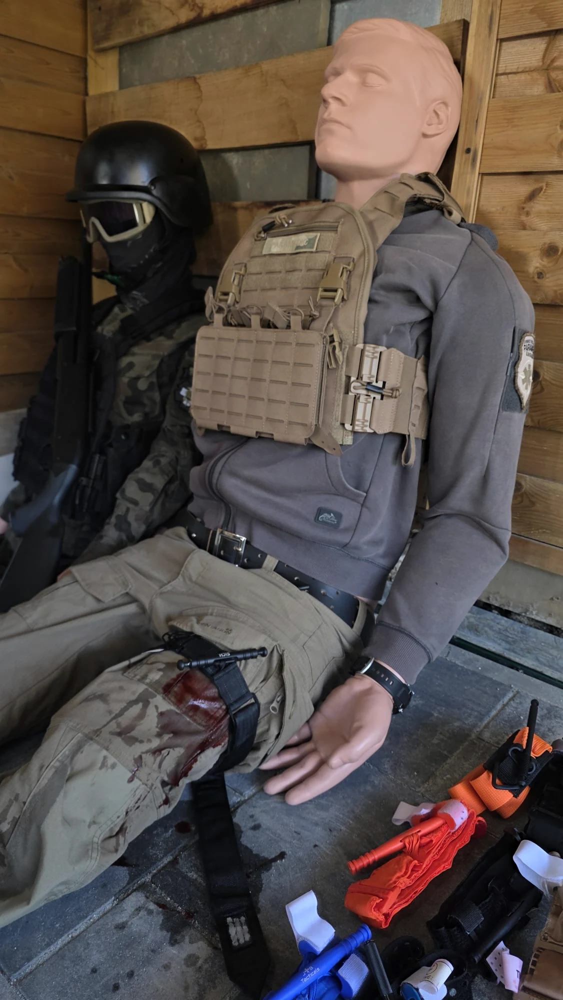
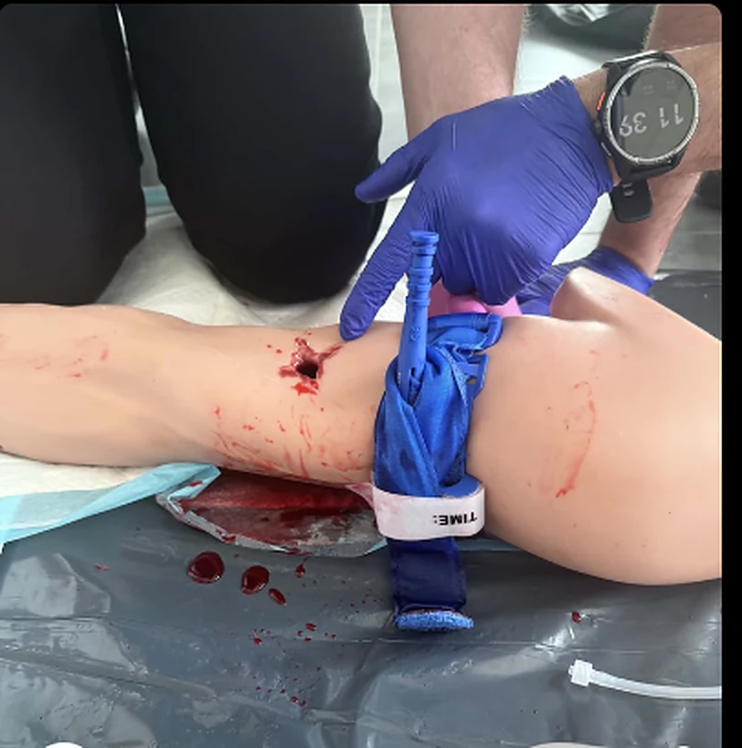
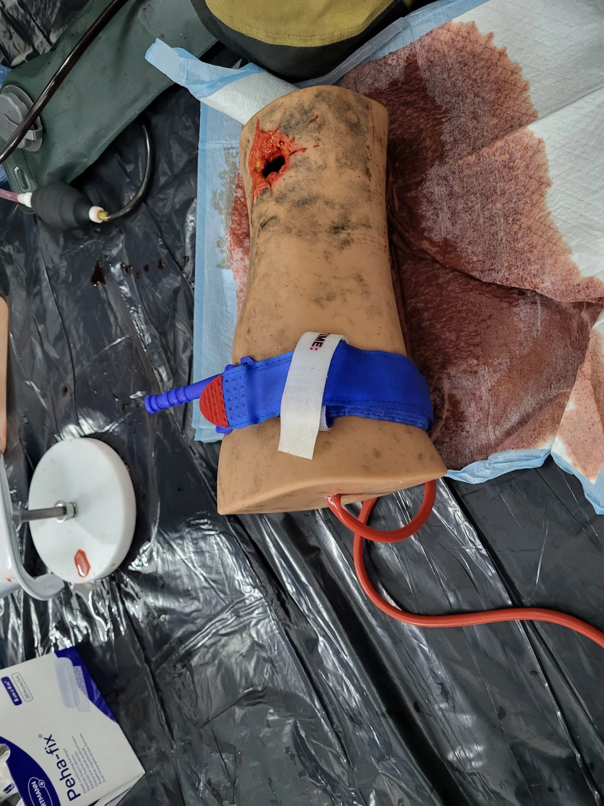
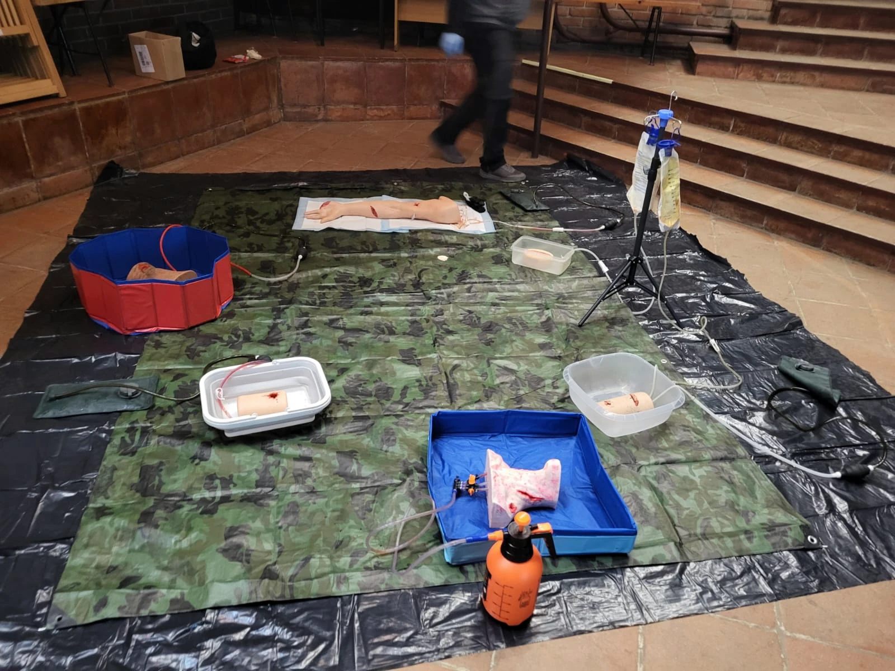
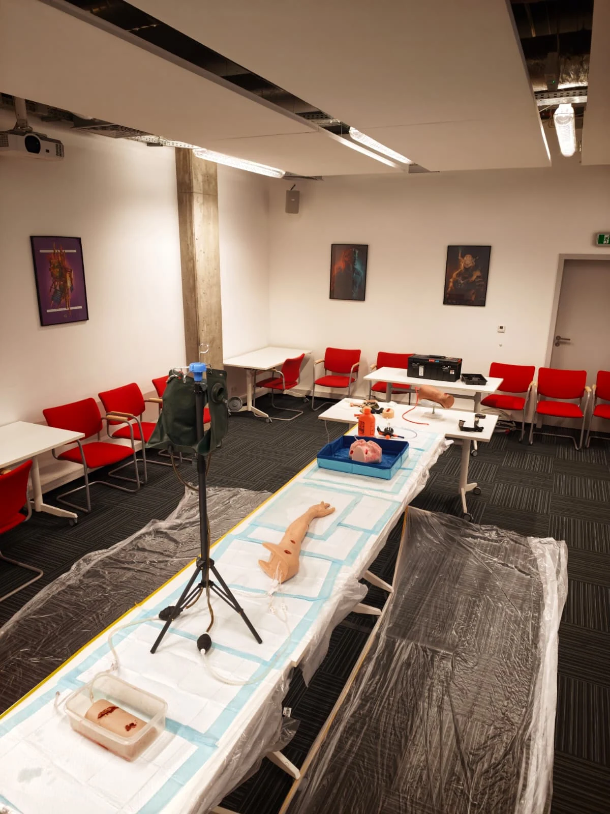
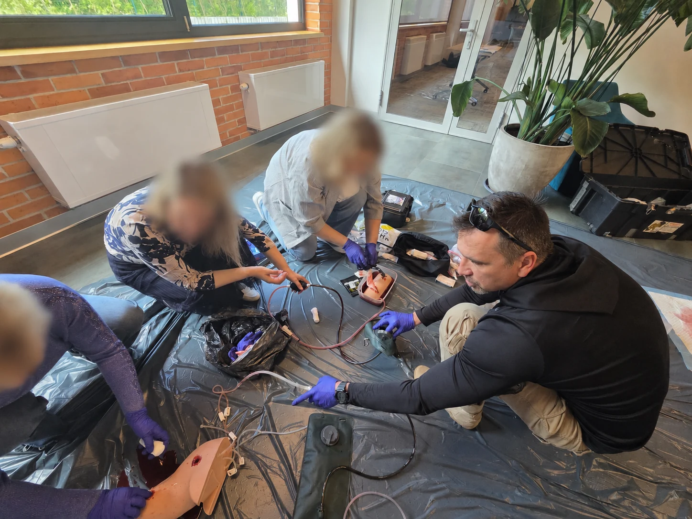
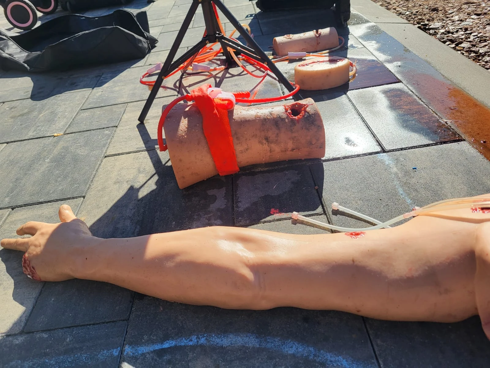

Rozpoznaj
i uciskaj
Masywny krwotok, bezpośredni ucisk i kontrola skuteczności.
PODSTAWY DZIAŁANIA
Opracowany w Polsce system szkoleń H-CORE EDU. Praktyczne kursy, przygotowanie instruktorów i wspólny standard skutecznego tamowania krwotoków.

Kurs podstawowy polskiego programu STOP KRWOTOKOM SYSTEM dla osób cywilnych. Podczas zajęć stacjonarnych instruktor obserwuje ćwiczenia, poprawia technikę i potwierdza wykonanie wymaganych zadań. Bez egzaminu końcowego.
Masywny krwotok, bezpośredni ucisk i kontrola skuteczności.
Fabryczna opaska uciskowa, wypełnianie właściwych ran, gaza i opatrunki hemostatyczne.
Ucisk z wykorzystaniem dostępnej odzieży oraz specyfika pomocy dzieciom.
Przygotowanie online (2–3 godziny), jeden dzień zajęć stacjonarnych i egzamin: teoria, praktyka, dydaktyka.
Kurs dla osób z przygotowaniem ratowniczym lub medycznym. Po zdaniu egzaminu otrzymujesz certyfikat instruktora; uprawnienie do prowadzenia szkoleń wymaga osobnej autoryzacji.

Podstawową prezentację, podręcznik, karty ćwiczeń i dostęp do panelu prowadzenia szkoleń oraz certyfikatów.
Ośrodek może prowadzić kursy pod własną nazwą i dodawać swoje logo do certyfikatu. Wystarczy dwóch autoryzowanych instruktorów STOP KRWOTOKOM SYSTEM: jeden ratownik medyczny i jeden ratownik KPP. Koordynatorem merytorycznym ośrodka jest ratownik medyczny.





Planowane kursy STOP KRWOTOKOM SYSTEM i kursy instruktorskie zostaną opublikowane po zakończeniu przygotowania programu. Wersja demonstracyjna nie przyjmuje zapisów ani płatności.
Zapytaj o szkolenie ↗
Szukasz kursu pierwszej pomocy, ćwiczeń z opaską uciskową lub szkolenia instruktorskiego? Poznaj zakres STOP KRWOTOKOM SYSTEM i sprawdź, gdzie szukać pozostałych szkoleń H-CORE EDU.
STOP KRWOTOKOM SYSTEM to autorski polski program H-CORE EDU poświęcony kontroli krwotoków. Obejmuje rozpoznawanie zagrożenia, ucisk bezpośredni, opaskę uciskową i wypełnianie właściwych ran. Zobacz program i ćwiczenia.
Na tej stronie opisujemy kurs STOP KRWOTOKOM SYSTEM dla cywilów i ścieżkę instruktorską. Szkolenia z pierwszej pomocy taktycznej i ratownictwa w warunkach szczególnych znajdziesz w pełnej ofercie H-CORE EDU ↗.
Informacje o szkoleniach STOP THE BLEED znajdziesz w ofercie H-CORE EDU ↗. STOP KRWOTOKOM SYSTEM jest autorskim polskim programem opisanym na tej stronie. Sprawdź nazwę i zakres wybranego kursu przed zapisem.
Po potwierdzeniu kwalifikacji organizator zaprasza instruktora na wskazany adres e-mail i nadaje ważność uprawnień. Własne hasło ustawisz z linku w zaproszeniu. Przejdź do strony logowania.